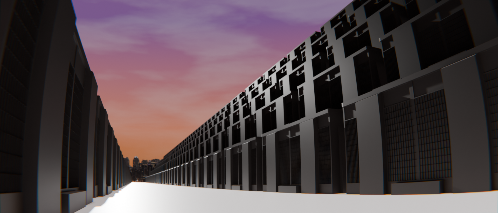

In 1887, Rizal returned to the Philippines after the publication of Noli Me Tangere. His visit was significant as he was more exposed to the realities of colonial oppression. While on Philippine soil, Rizal was both an object of admiration and condemnation. He interacted with other Filipino reformers and continued his efforts to improve the island's future.
